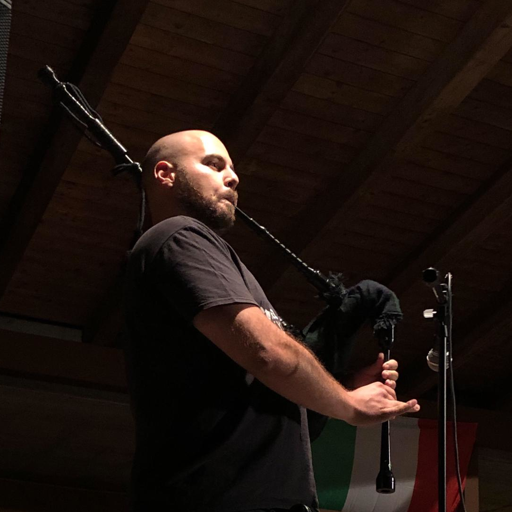

about:$ |

Hi! My name is Lorenzo Rossi and I like doing various things.
tl;dr
Here is my CV (in Italian).
life
I was born in Galliate, a small town in the North of Italy, in 1993. I am currently still living here.
studies
I am an undergraduate student in Composition at Novara's Conservatoire.
I am a CELTA graduate from IH Milan.
I am currently a graduate student in Computer Science at University of Eastern Piedmont.
work
I have worked as activity leader for Oxford International Education Group in Exeter (UK, Devon) in 2013.
I have composed, transcribed and arranged music for small ensembles and for computer orchestral simulations since 2015. Check the section /music for more details.
I have worked as invigilator and marshal at Cambridge certificate exam sessions and as English teacher for My Open School for Cambridge, a language centre based in Busto Arsizio (Varese, Italy), from 2017 to 2019.
I have worked as freelance software developer in summer 2021.
I am currently teaching Computer Science and English at Complesso Scolastico Paritario "Quintino Sella" in Novara, while writing and playing music as a side hustle.
likes
I love being in the nature.
I am lately developing a radical passion for the Great Highland Bagpipe.
I love orchestral and metal music, especially when blended together with electronic or ethnic music.
If I had to choose a favourite composer, that would be J.S. Bach.
I am lazy enough to spend days trying to automatize a 10 minutes long manual computer task.